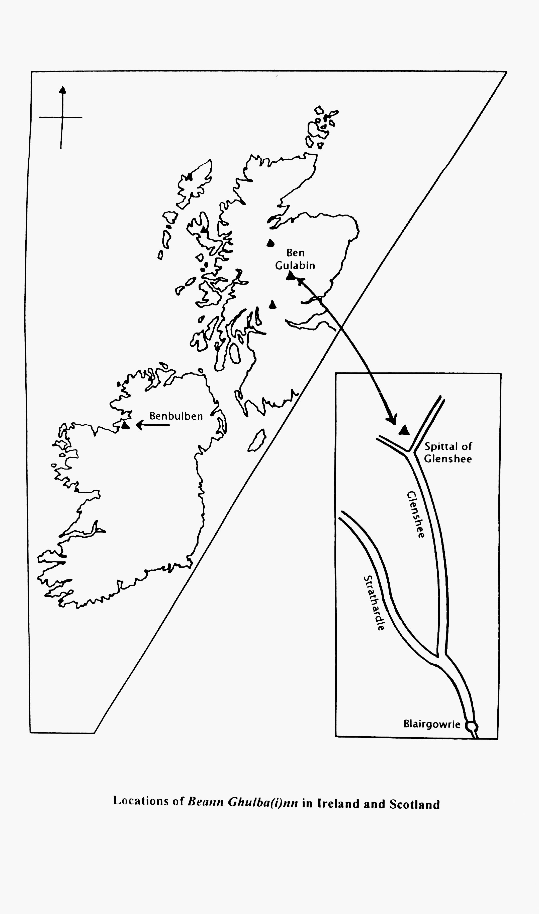

Notes to Poem XIII
i. MS Text: The manuscript text of the Lay of Diarmaid occupies pp. 147-8 of BDL as numbered. By error, the verso of p. 147 is not numbered in the manuscript, and it appears as p. 147a in the transcript. In all, therefore, the text occupies the lower half of p. 147 as numbered, the whole of p. 147a and part of p. 148 as numbered. A nineteenth-century hand, possibly that of Dr John Smith, has written ‘Bas Dhiarmad’ below the scribe’s original rubric.
As MS demonstrates, the BDL text of the Lay of Diarmaid is remarkably clean, and it is easily legible throughout. A few small scribal spelling alterations occur, but these do not have any substantial bearing on the interpretation of the text. The BDL scribes do not appear to have used more than one version of the poem in creating their text, and its clean format suggests that they were able to comprehend the sense of the entire poem without difficulty.
Trimming of the outer margins of manuscript pages for binding has resulted in the loss of occasional letters at the beginnings or ends of certain lines, but these letters can be restored with reasonable confidence.
ii. General Background: Laoidh Dhiarmaid, the Lay of Diarmaid, was one of the most popular of all the Fenian lays in Gaelic Scotland, and versions of it occur in most of the main Scottish ballad collections from the eighteenth and nineteenth centuries. Its inclusion in BDL suggests that its popularity in Scotland was well established by the first quarter of the sixteenth century. The lay may have owed something of its importance in Scotland to the prestige of its hero as one of the supposed ancestors of the Clan Campbell (Gillies 1987). In a letter written in 1763, the Rev. Alexander Pope of Reay claimed that the lay was held in special esteem by an old Campbell reciter in his parish, who insisted on removing his cap while singing it, as a mark of respect to the deceased Diarmaid (Mackenzie 1805).
The lay tells how Diarmaid’s death occurred as a result of his being wounded in the sole of his foot by the bristle of a venomous boar. The hunt for this boar was specially arranged by Fionn, and it was located at Beann Ghulbainn. The uncomplicated and economical narrative of the ballad contrasts with the more ambitious medieval romance, Tóruigheacht Dhiarmada agus Ghráinne (‘The Pursuit of Diarmaid and Gráinne’, henceforward referred to as TDG), which was also known in Gaelic Scotland in the modern period (Ní Shéaghdha 1967). The inclusion in BDL of another lay associated with Diarmaid and Gráinne, Do mhillis mise, a Ghráinne (‘You have ruined me, O Gráinne’), in which Diarmaid rebukes Gráinne for causing the enmity now existing between him and his former companions, suggests that TDG was probably known at least in outline in Scotland by c. 1500. The presence of both items in the manuscript could indicate a fairly specific interest in Diarmaid on the part of the BDL scribes and their sources. TDG is, of course, well attested in Ireland in the Middle Ages.
Given the obvious popularity of Diarmaid on both sides of the North Channel, it is something of a surprise to find that there is no firm evidence that the Lay of Diarmaid has been preserved in Ireland. Such an anomaly may be caused merely by the loss of texts on the Irish side. The fact that the lay was, in all probability, composed in Scotland should not have debarred it from being accepted into circulation in Ireland, since traffic in such material would always have been two-way, and a version of it may once have crossed the water. On the other hand, it is conceivable that the lay may have lost its place beyond Scotland since it conflicted in some respects with the prestigious literary prose version represented by TDG, which was extremely popular in Ireland. To show the relationship of the accounts of the death of Diarmaid in the lay and in TDG, it is necessary to sketch the development of the story as a whole within the complementary traditions of Ireland and Scotland.
(1) Irish accounts of the Death of Diarmaid and their relationship to the BDL lay
The earliest references so far traced to the death of Diarmaid occur in Acallam na Senórach of c. 1175. There are two such references in this text (Ní Shéaghdha, Tóruigheacht, xii; Stokes andWindisch,1900, I, ll. 1514-16, 6895-6):
(a) Ocus luidhset as sin rompo co Leacht na muice (co Beind nGulban) áit ar marbh an muc Diarmait ó Duibhne … (‘And they went from there to Leacht na Muice [the Grave of the Pig] (to Ben Gulban) where the pig killed D. ó D.’)
(b) 7 tangadur rompo…do Lighi in fheindida, in bail ar marbh in mucc doilfi draí[d]echta Diarmuit hua Duibhne. (‘and they came on their way … to Lighe an Fheindida [the Grave of the Warrior] where the magical pig killed D. hua D.’)
These brief allusions are sufficient to indicate that the essential elements in the story of Diarmaid’s death were known in Ireland by the late twelfth century at least. Extract (a) makes Beann Ghulban the scene of the tragedy, and a mountain of this name has remained the principal locus in subsequent Irish and Scottish Gaelic tradition. It is, however, worth noting that extract (a) indicates that ‘Beann Ghulban’ is an alternative name for the site, while extract (b) gives it yet another name, with no allusion to ‘Beann Ghulban’. In later tradition, the name ‘Beann Ghulban’ (and its variants) could be grafted on to an existing hill name, or used as an alternative, thus preserving the essential onomastic component of the story. Extract (b) draws attention to the magic nature of the boar, and later Irish and Scottish versions similarly preserve this point.
The Acallam references make no attempt to link the death of Diarmaid to his elopement with Fionn’s betrothed, Gráinne. Yet the story of the elopement was evidently known in Ireland as early as the tenth century under the title, Aithed Grainne ingine Corbmaic le Diarmaid ua nDuibne, the title alone being preserved (Mac Cana 1980, 46, 57, 86-7, 106). Something of the possible content of the Aithed may be suggested by tenth- and eleventh- century versions of isolated episodes connected with, or presupposing a knowledge of, the elopement. Yet none of these episodes recounts the death of Diarmaid. We need not be too hasty in concluding that, in the tenth century, Diarmaid’s death was not yet a part of the larger story, since so much evidence may now be lost, but, the pattern is suggestive.
Certainly by the fourteenth century it would seem that the oidheadh of Diarmaid had come to be related to the aitheadh. Evidence for this is found in the verse of Gearóid Iarla, third Earl of Desmond, who died in 1398. In the poems contained in the so-called Duanaire Ghearóid Iarla, Gearóid makes numerous allusions to the story of Diarmaid and Gráinne, including the death of Diarmaid. He makes it clear that the tragedy took place ‘Ag Beinn Ghulban is tír thuaidh’ and that the principal agent was a venomous boar. Gearóid, however, directly links his death with the elopement (Mac Niocaill 1963, 7-59, especially ll. 71-2, 103, 439-40, 729-30, 756-60). A Duanaire Finn ballad, which is to be dated 1250-1400, similarly relates the two episodes (DF I, no. xvii).
The relationship of Diarmaid`s death to his flight with Gráinne is well developed in the Early Modern prose tale, TDG, which is of central importance in the evolution of later versions of the Diarmaid and Gráinne story, in both Irish and Scottish tradition. TDG, which may have been put together in the fourteenth century but is not attested in manuscript before 1651, locates the pursuit of the lovers by the aggrieved Fionn in the south of Ireland. This suggests a southern Irish provenance for the redaction (Ní Shéaghdha, Tóruigheacht, xiii-xiv). TDG is of special interest because of the number of minor themes which it has in common with the French romance of Tristan and Isolt, quite apart from the close overall resemblance which it bears to the latter (ibid., xxvi-xxix). In this discussion, however, our main concern is with the account of Diarmaid’s death given by TDG, and this may now be summarised (ibid., lines 1419-1818):
TDG portrays Diarmaid’s death as a result of his geasa and Fionn’s enmity, both factors being of importance. It was one of Diarmaid’s geasa that he should not hunt a pig. This came about as a consequence of an incident in the house of Aonghus an Bhrogha. Diarmaid’s father, Donn Donnchadha, was envious because Aonghus an Bhrogha’s people loved his steward’s son as much as Aonghus loved his foster-son, Diarmaid. Two of Fionn’s hounds began to fight in the house, and the steward’s son ran for safety between the knees of Donn Donchadha, who promptly killed him by squeezing him between his knees. There was some dispute as to whether the boy was killed by the hounds or by Donn, but Fionn ascertained by his powers of divination that Donn had been responsible. The steward then wanted to kill Diarmaid in a similar way, but Aonghus stopped him. The steward then struck his dead son with a magic rod, turning him into a boar which would have the same length of life as Diarmaid and by which Diarmaid himself would fall. Aonghus put Diarmaid under geasa never to hunt swine. The boar of Beann Gulban was the steward’s son.
Diarmaid did not learn of his geasa until he had committed himself to hunt the boar of Beann Gulban, at which point Fionn informed him of them. Fionn, Diarmaid declared, had engineered the hunt as an act of vengeance, but it was of little use for him to try to avoid it in view of his geasa. In the ensuing struggle, Diarmaid struck twice at the boar, making no impression on it, and breaking his own sword in the second attempt. The boar then sprang on him, and threw him on its back. Sitting back to front on the boar, Diarmaid was carried some distance before being thrown and gored by it. In a final desperate effort, Diarmaid killed the boar with the hilt of his sword.
As he lay dying, Diarmaid asked Fionn to provide him with a healing drink of water from his hands. This Fionn refused to do, saying that Diarmaid did not deserve it. Diarmaid than defended himself by relating how he had saved Fionn from an attack by Cairbre Lifeachair. When Fionn said that he had taken Gráinne from him, and was therefore unworthy, Diarmaid related how he had protected him in an incident in Bruidhean an Chaorthainn. Fionn was eventually persuaded by Osgar to give Diarmaid a drink, but Fionn let the water run through his fingers twice. When he reached Diarmaid on the third attempt, Diarmaid was dead. TDG concludes by describing the reactions of Gráinne on hearing of Diarmaid’s death.
It will be evident from the foregoing summary that the BDL ballad is, to some extent, similar to the account of Diarmaid’s death given in TDG. It will be equally evident, however, that there are several significant differences between the two versions, and these may now be set out and discussed.
(a) The ballad, unlike the TDG account, is not set ostensibly within the framework of the story of Diarmaid and Gráinne. It makes no overt mention of Diarmaid’s involvement with Gráinne. Fionn’s reason for making Diarmaid hunt the boar is not fully explained, although he is said to have fallen ‘trē éad’ (‘through jealousy’, l. 86). However, the fact that Fionn is involved in planning Diarmaid’s death suggests that the ballad assumes a knowledge of the elopement on the part of the audience. Otherwise, Fionn is reduced to being a villain without good cause. Furthermore, the concluding description of Diarmaid as ‘coimhtheachtach is mealltoir ban’ (‘the companion and enticer of women’, l. 97) may well have been intended to remind the audience of the aitheadh. Such laconic allusiveness is wholly consistent with ballad style. It is thus by no means improbable that the ballad was sometimes recited in the context of a wider prose account of Diarmaid and Gráinne, at an appropriate stage in the narrative. Fragments of the ballad survive in Scottish folk-versions of the tale (Campbell 1861, III, 49-60). The poignancy of the ballad could also be intensified by relating it to the preceding events of the aitheadh. Nevertheless, it could, and probably often did, function as an independent, self-contained narrative poem.
(b) Although both TDG and the BDL ballad attest to the magic nature of the boar that killed Diarmaid, they attribute different origins to it. TDG makes the boar a reincarnation of the son of Aonghus an Bhrogha’s steward. Diarmaid’s death is therefore seen in TDG as the steward’s act of vengeance, the result of Diarmaid’s violation of his geasa, and the overall consequence of his involement with Gráinne.
The ballad provides the boar with a less complex background. It is said to have belonged initially to the herd of Balar (ll. 27-28). This character, who is doubtless to be equated with the malevolent Fomorian of the same name (DF III, 345 s.v. Balor) owned swine which are further described in a Duanaire Finn ballad. Of special interest is the description of a very large boar of this breed which the Fian succeeded in killing – ‘Torc trom do shíol mhuc mBalair … Cullach go ngné gairbh go ngus’ (‘A heavy hog of the breed of Balar’s swine … a boar of grisly shape, of power’) (DF I, no. XIV, ll. 1-8). This boar would certainly appear to be a close relative of the one that killed Diarmaid. The BDL ballad, however, lays more emphasis on the boar’s magic nature, and in particular on its venomous bristle (ll. 37-40). Boars with similar features, though lacking this precise pedigree, are common in Fenian and other Celtic literature (Bromwich and Evans 1988, lxiii-lxxiii).
In subsequent Irish tradition, oral versions of the elopement agree with TDG’s description of the boar’s origins and give it considerable prominence (Ní Shéaghdha, xxiv). In later Scottish tradition, if prose descriptions of the boar are found, these tend to agree with the BDL ballad. The main difference is that ‘Balar’ has become ‘Mala líth’ (or some such form of the name), who is described as ‘an old woman … and she had a herd of swine, and she had a venomous boar for guarding the pigs. There was no being that went to hunt this boar that came back alive’ (Campbell, Popular tales III, 65).
(c) TDG and the BDL ballad differ markedly in their description of the fatal wounding of Diarmaid by the boar. In TDG, Diarmaid is thrown on to the boar’s back, carried some distance by it sitting back to front, and then gored, after the boar has thrown him off. A similar account of a Fenian hero’s encounter with a boar is found in a Duanaire Finn ballad, which Murphy has dated to the mid-twelfth century in its original form. Here, the dogs of the Fian rouse a monstrous boar which proceeds to kill a large number of warriors. Colla then leaps upon it at the woods of Formaoil, and, as he is carried along on its back, he wounds it nine times (DF II, no. liv; DF III, 120). The main distinction between this account and TDG is that in the former the hero leaps on to the boar on his own initiative, and he is evidently not killed.
In the BDL ballad, Diarmaid slays the boar at the outset, and is then given the task of measuring it by Fionn, first from snout to tail (ll. 59-60) and then in the opposite direction (ll. 65-66). Since the latter is the more dangerous venture, Diarmaid is offered, or more probably reminded of, an unspecified rogha by Fionn (ll. 67-68). In the act of measuring, he is wounded in the sole of his foot by the poisonous bristle of the boar (ll. 71-72). The ballad clearly employs a variant of the international motif of Achilles’ Heel, which implies that the hero is vulnerable only in one particular spot of his body (Z311 in Thompson 1955, V, 565).
In later Scottish tradition, all prose accounts of Diarmaid’s death agree with the BDL ballad, adding only small details, such as the dimensions of the boar, or the mole which Diarmaid has on the sole of his foot, and by which alone he is vulnerable (Campbell 1860, 58-9). On the Irish side, most oral versions follow the TDG account, but there are a few versions which agree with the BDL ballad. Roscommon and Kilkenny furnish variants of the motif found in the ballad. So also does a poem found within TDG itself. Aonghus an Bhrogha’s lament for Diarmaid agrees with the Roscommon tradition that Diarmaid was pierced by the boar’s tusk. According to O’Grady, Diarmaid’s wounding while measuring the boar was ‘the common tradition amongst the peasantry of Ireland’ in his own time (Ní Shéaghdha, xxiii-iv; Lloyd, Bergin and Schoepperle 1912, 44-5). Nevertheless, the surviving evidence may suggest that this account was especially popular in the north, whereas the prose version in TDG may reflect the dominant tradition in the south of Ireland (Bruford 1969, 106-7).
(d) The most conspicuous divergence between the TDG account of the death of Diarmaid and the BDL ballad occurs in the description of events following his wounding. In the BDL ballad, Diarmaid expires immediately after he is wounded by the boar (ll. 73-76). In TDG, however, his wounding is followed by an episode in which Diarmaid asks Fionn to provide a healing drink of water. Fionn’s prevarication, and the consequent death of Diarmaid, add considerably to the dramatic quality of the story. The inclusion of this incident in subsequent Irish and Scottish prose folk versions, and in almost all later Scottish ballad versions, would suggest prima facie that the BDL ballad is defective or, in Professor W. J. Watson’s words, ‘dramatically incomplete’. Watson, who regarded the healing drink as being ‘of the essence of the tale’, saw a possible connection, on the level of dramatic irony, between Diarmaid’s request and the rogha which he had been offered twice by Fionn (ll. 19, 67) (Watson 1916, 352).
The situation may well be more complex than mere incompleteness on the part of the BDL text. It may indeed be asked whether the episode is not a later addition to the story by a dramatically conscious redactor, an addition which may have been incorporated into the ballad texts under the influence of TDG. Evidence of the exact development of the story earlier than TDG is unfortunately lacking, and the question of later addition cannot therefore be answered with confidence. Professor James Carney has, however, advanced the theory that the incident was brought in originally under the influence of the romance of Tristan and Isolt, which he regards as the source of parallel episodes in the Diarmaid and Gráinne story (Carney 1955, 189-242, esp. 217-20). Carney, who evidently regarded the death of Diarmaid by the boar as originally separate from TDG, writes: ‘The adapter of the Tristan romance to a Fenian background was faced with the problem: how am I to make Diarmait die as a result of machinations of the jealous king (Finn) when everybody knows that he was slain by the Wild Boar of Ben Gulban? This is solved by making Finn and Diarmait hunt the Wild Boar together and by inventing for Finn a magic property, failure to use which makes him morally guilty of Diarmait’s death.’ Carney points to the episode in Tristan, in which the hero’s death ‘as in Diarmait, comes about when he is seeking a cure for his wounds and is a direct result of having loved the Old King’s wife’ (ibid., 219 and n. 1).
If such a viewpoint, though suggestive, is not capable of ultimate proof, there is some evidence that, as far as the later Scottish ballad versions are concerned, the episode may have been added to them at a fairly late stage. It is noticeable that the relevant quatrains in these versions are in a loose form of deibhidhe metre, and not in the relatively well preserved rannaigheacht mhór of the rest of the ballad, a point which suggests accretion to the earlier text. It is perhaps also worth noting the view of the Rev. Dr John Smith, who omitted the episode from a translation of the ballad in his Galic Antiquities, stating that ‘…it is of so different a complexion from the rest of the poem that no apology needs to be made for rejecting it, as the interpolation of some later bard’ (Smith, Galic antiquities, 195).
(e) The BDL ballad makes no reference to any geasa (‘taboos’) which Diarmaid violates, and which help to bring about his death. TDG, however, gives considerable emphasis to Diarmaid’s geasa never to hunt swine. Later Irish prose versions preserve an element of fate in the matter (Ní Shéaghdha, xxiv), and subsequent Scottish versions, both prose and verse, put Diarmaid under constraint to answer the cry of the hunt arranged by Fionn. In the ballad there would seem to be a general sense of fate and foreboding in the portrayal of the hunt (see qq. 5-6) (Campbell, Popular tales III, 58-9; Campbell 1872, 159, qq. 11-12).
The geasa belong essentially to a wider canvas than that of the ballad and the BDL ballad may again assume that its audience is familiar with them. Their absence from the ballad does, however, result in a markedly more sinister portrait of Fionn than is apparent in TDG, since he is depicted not so much as the instrument of fate, but as a cunning schemer.
The evidence adduced above indicates that the BDL ballad differs from the TDG version of Diarmaid’s death at a number of points. This does not mean that the story as told in the ballad would have been unwelcome or unknown in Irish tradition. Indeed, prose versions of Diarmaid’s death which differed in detail from TDG, and sometimes agreed with the ballad, were apparently current in Ireland. Yet it is possible that the TDG version became dominant in Ireland, and that other versions were either assimilated to it or gradually reduced in status. Even in Gaelic Scotland, where the ballad was most popular, TDG exerted a stong influence on its later development. We may also conclude that the tradition of Diarmaid’s death while measuring the boar has a strong link with the north of Ireland and pre-eminently with Scotland. It is by no means impossible that the earliest tradition relating to the death of Diarmaid is preserved in these parts, whereas it has been overlaid, and even displaced, in the south of Ireland (and progressively in other areas) by the version in TDG.
(2) Scottish origin and distribution of the ballad
It is generally agreed that, in Ireland, the site of Diarmaid’s death, referred to in TDG and elsewhere as Beann Ghulban, is to be equated primarily with Benbulben in Co. Sligo (Ní Shéaghdha, 145 s.v. Beann Ghulban). In Gaelic Scotland, the principal identification of Beann Ghulbainn (spelt variously in the ballad versions) would appear to be with Ben Gulabin in north-east Perthshire. This hill lies at the upper end of Glenshee, immediately to the north of the Spittal of Glenshee. It is now difficult to know whether the hill was thus named originally, or whether an earlier name was displaced under the influence of the story. The extent to which the death of Diarmaid attached itself to the toponomy of this area is reflected in the Rev. Allan Stewart’s account of the parish of Kirkmichael, published in 1795: ‘A hill at the head of Glenshee, called Beinn-Ghulbhuinn, is distinguished by having been the scene of a hunting which proved fatal to Diarmid, one of the Fingalian heroes. Here are shown the den of the wild boar that was hunted, a spring called Tobar nam Fiann, the fountain of the Fingalians; a small lake called Loch an Tuirc, the boar’s loch; also Diarmid’s grave, where he was buried by his comrades …. The eminence where Diarmid was buried, is called Tullach Diarmid, Diarmid’s Hill ….’ Stewart, who summarised the story of the ballad, knew of ‘a Gaelic poem extant … which expressly affirms the hunting to have been in the hills of Glenshee’ ( Sinclair 1795, 507-9).
The identification of Beann Ghulbainn primarily with Ben Gulabin, Perthshire, can be made with reasonable confidence because of its association with Glenshee, which is generally also mentioned in the Scottish ballad versions. No other site is known where the place-names and the geographical features are in such a close and convenient relationship. In the BDL version, Gleann Síodh is the principal location, and the reference occurs at the very beginning of the poem (l. 1). The glen is said to lie ‘below green Beann Ghulbainn’ (l. 5), a description which accords perfectly with the Perthshire site. The dúnadh of the BDL version makes it clear that a reference to a gleann must have formed part of the opening phrase of the original ballad version, and that it was not a later addition. However, the BDL text begins with a pair of quatrains which both open with a reference to a gleann. Although it is possible that the ballad could have commenced originally with what is now its second quatrain in the BDL text, the second quatrain is reinforced greatly by the specific detail of the first one, and it seems likely that both were intended to go together. If we accept that the first two quatrains belong together, the combination of literary and geographical evidence, for which the Irish site (lacking a Gleann Síodh) does not afford an explanation, suggests very strongly that the ballad was indeed composed in Gaelic Scotland, by a poet familiar with the Glenshee area of Perthshire.
The apparently close connection between the ballad and Perthshire in no way hindered its spreading to other parts of Gaelic Scotland. Beann Ghulbainn, in the nature of the tradition, could be re-localised. In Skye, for example, ‘Beinn Ianabheig [recte Tianabhaig], a peaked hill above the Bay of Portree, was once called Beinn Gulban, where Diarmad, the friend of Fionn, was wounded when measuring the wild boar’ (Campbell 1872, 164). Gleann Síodh appears to have lost much of its geographical significance, the second element evidently coming to be regarded as síth in a general sense, and thus popularly construed as either ‘peace’ or ‘fairy’ (Gillies 1786, 284-7). It would seem that the physical form of the mountains or hills which attracted the story, or became associated with it, was a much more important factor in the localisation of the story. Almost invariably the primary sites, in both Ireland and Scotland, consist of an eminence with a noticeable plateau, and a spur which tapers gradually from the edge of the plateau. When viewed from a distance a hill with this kind of ‘beak’ or ‘snout’ (gulba) can resemble a crouched boar, and it is possible that, at a storiological level, there was some connection between such hills and the age-old tradition of the boar-hunt.
Eighteenth-century evidence indicates that the Lay of Diarmaid was found both on the mainland and in the islands (Anderson 1792, 212-13), possibly having been aided in its movement by Campbell expansion (Campbell, Popular tales III, 60-63). By the mid-nineteenth century, Hector MacLean could write: ‘This Laoidh Dhiarmaid is one of the most popular Ossianic pieces recited in the Long Island, and is known to more individuals than any other’ (ibid., 73). Reciters of the ballad seem also to have known the story of Diarmaid’s elopement with Gráinne (ibid., 65, 73).
(3) Later versions
Versions of the Lay of Diarmaid from the eighteenth and nineteenth centuries bear a strong basic relationship to the BDL version. Most later versions, however, contain material not found in the BDL text, and the amount of such material seems to increase with time.
The version closest to the BDL text would seem to be that of Pope (Campbell 1872, 219). Although garbled and confused in parts, and not following the BDL sequence of quatrains, this version contains no material which cannot be traced in BDL. Perhaps significantly (although one must consider the possible loss of quatrains), it does not refer to Fionn’s healing drink. A defective version in Edinburgh MS LXII preserves, in order, BDL qq. 1, 2, 3, 4, 9, 1O, 11ad, 12, 13, 15, 16. It then adds a quatrain giving the length of the boar, before breaking off (MacBain and J. Kennedy1892, 166). If the missing quatrains were available, we might form a different opinion of the relationship between this version and BDL.
The majority of eighteenth- and nineteenth-century versions may be placed in three fairly distinct groups. The principal criteria here are the nature and amount of material in each version which is extraneous to the BDL text.
(A) A group of versions represented by the texts of MacNicol and Hill. MacNicol and Hill are identical, reflecting a common source, likely to have been MacNab, the Dalmally blacksmith who is known to have supplied Hill’s version (Hill 1782-3, 14-16). A very similar version is found in MacFarlane’s collection (MacBain and Kennedy 1892, 274-6). This is often close to MacNicol/Hill in the wording of corresponding quatrains; all three versions begin with q. 3 of the BDL text, and place the locational quatrains, qq. 1-2, of BDL towards the end. Nevertheless, MacFarlane includes a number of quatrains attested in the BDL text, but omitted in MacNicol/Hill. The MacNicol/Hill version omits the following BDL quatrains: 5-8, 10, 16, 20-25. MacFarlane’s version includes BDL qq. 20-25, although not in that order. Quatrains found in MacNicol/Hill and MacFarlane, but absent from BDL, are as follows:
MacNicol/Hill, q.8: This gives the length of the boar (sixteen feet). It seems to be in a form of rannaigheacht bheag.
MacNicol/Hill, qq. 11-17. These describe Diarmaid’s request for a drink from Fionn’s cuach, but Fionn refuses. Diarmaid’s defence – that Gráinne put him ‘fo gheasaibh’ – is directly comparable with that in TDG. The quatrians do not describe how Fionn let the water run through his fingers.
(B) A group of versions represented by the text of McLagan MS 59 (Gillies, Collection, 284-7). This group includes versions in McLagan MSS 135 and 209, as well as J. G. Campbell’s version from Tiree, which can be traced back to the second half of the eighteenth century (Campbell 1891, 57). The text in McLagan MS 59 opens with q. 3 of BDL, followed by qq. 1-2; the other McLagan versions match the BDL opening. The core of material which corresponds directly to that in BDL is comparable with that in the MacNicol/Hill version. McLagan MS 59 and Campbell’s version contain the additional quatrains of the MacNicol/Hill text; McLagan MSS 135 and 209 are similar, but they omit the length of the boar, as well as Diarmaid’s reference to Gráinne’s imposition of geasa. All the versions in this group include the following quatrains, not found in BDL or MacNicol/Hill:
McLagan MS 59, qq. 5-6: In these Gráinne asks Diarmaid not to respond to the ‘fiadhach bréige’, but he refuses to listen. The quatrains appear to be in a form of rannaigheacht bheag.
McLagan MS 59, qq. 9-10: These describe the unleashing of Fionn’s dogs, and give an exhortation to Diarmaid. (McLagan MSS 135 and 209 omit q. 10.) The unleashing of the dogs is reminiscent of, though not identical with, the unleashing of Fionn’s dog, Mac an Chuill, in TDG. The metre of the quatrains is corrupt.
McLagan MS 59, q. 26: This tells how Gráinne, two white dogs and Diarmaid, were buried in the one tulach. According to some prose folk versions, Gráinne was buried alive, or burnt ‘ann an cual de ghlasdarach’. The metre appears to be a form of rannaigheacht bheag.
(C) This group of versions is perhaps most succinctly represented by the MacCallums’ text (in its Gaelic edition: MacCallum 1816). It includes Kennedy (1) and Kennedy (2), and J. F. Campbell’s composite version from South Uist and Barra; Irvine’s version has some similarities, but is closer to group (B) (Campbell 1872, 158-64; Campbell, Popular tales III, 73-87). The MacCallums’ text is closely related to that of McLagan MS 59, and includes all the distinctive quatrains of the latter. Campbell’s version omits reference to the unleashing of the dogs, but includes McLagan’s other additional quatrains. Kennedy (1), which does not differ substantially from Kennedy (2), does not mention the unleashing of the dogs, the length of the boar, or the burial of Gráinne, Diarmaid and the dogs. The distinguishing features of this group of versions are as follows:
MacCallum, 189, l. 21: At the point where he states that his only wrong has been to yield to Gráinne, Diarmaid makes a long speech in which he recounts how he defended Fionn on three occasions: first, in the ‘bruth chaorann’ when Fionn was attacked by Deud-gheal; then when Deud-gheal attacked him on another day; and again when Cairbre attacked him in ‘cath Chonuill’. In Kennedy (1), Diarmaid refers to his defence of Fionn in the ‘Bruidhean Chaorann’, his slaying of three kings’ sons from Innis Tire-fo-thuinn in ‘Tigh teamhra’, and the attack by Cairbre. The influence of a version of TDG is evident here, and especially marked in Kennedy (1) where the three kings’ sons correspond to the three kings of Inis Tile referred to in TDG. The speech in Irvine’s version is shorter, vaguer, and has none of these allusions.
MacCallum, 190, l. 19: Following Diarmaid’s speech, mention is made of the beds of Diarmaid and Gráinne, and then Fionn laments them both. In Campbell’s version (qq. 28-32), the lament is similarly ascribed to Fion. Kennedy (1) ascribes it to Gráinne (qq. 55-70). The role thus given to Gráinne could again reflect the influence of a version of TDG. It seems certain that TDG is the source of Kennedy’s description of Gráinne’s swoon, when she hears of Diarmaid’s death (q. 54), immediately before her lament. The MacCallum version concludes with Fionn’s lament, but in Kennedy (1) Gráinne’s lament is followed by a second lament, evidently by Oisean. The starting point of all these elegiac verses is the unascribed lament in the BDL text (qq. 20-26), but they show considerable elaboration. The metrical form of many of these quatrains indicates clearly that they are later additions.
iv. Metre, language and style: If it is conceded that the Lay of Diarmaid was, in all probability, composed in Gaelic Scotland, it allows us a very important glimpse of the linguistic and stylistic capabilities of its composer, and it offers us the all-too-rare opportunity to compare the creative traditions of Ireland and Gaelic Scotland with respect to the composition of heroic ballads. If we can identify the scribal or post-compositional linguistic forms in the text as preserved in BDL, and if these are relatively few in number, we are indeed being provided with a window of unusual clarity.
In this instance, the likely scribal and post-compositional (or transmissional) features of the text can be identified easily. These include characteristics of the scribes’ dialect of East Perthshire Gaelic, such as the loss of unstressed syllables commonly in final position (ll. 6, 9, 12, 14 et passim), initial position (ll. 25, 33, 86) or more generally in pretonic position, as shown by the loss of the definite article (ll. 40, 63). The influence of vernacular Scottish Gaelic is otherwise very slight. There are minor inconsistencies in the representation of mutations, which may reflect the practices of the BDL scribes rather than the composer of the poem: thus the conjunction dá, normally followed by eclipsis, is shown in MS without eclipsis in l. 18 and with eclipsis in l. 26.
When these levels of language and orthographic representation are identified, the primary linguistic stratum of the ballad can be seen. This stratum is Early Modern Common Gaelic in the widest sense. It is hard to find any feature which is unequivocally and uniquely Scottish: the poet appears to have employed the forms of the Early Modern language as one might expect to find them in both Ireland and Scotland in this period. The use of char (ll. 61, 99) as a negative with preterite tenses may suggest a ‘northern’ provenance, and the enhancement of aicill by means of preaspiration in the final consonant of soc (l. 59 n) could suggest a Scottish dimension to the composition of the ballad. Otherwise there is little to remark. There is a distinct liking for the s-preterite forms of verbs (ll. 36, 37, 49, 53, 69), but this need be no more than a sign of relative lateness; there are also late verb-forms which add the preverb do where these are not historically correct, but are required for line length: thus do fríoth (l. 31), do thánaig (l. 52). The overall linguistic complexion of the ballad suggests that it could have been composed in the fifteenth century, and perhaps not long before the compilation of BDL.
The structure of the Lay of Diarmaid similarly reflects a pattern which is attested in Ireland. Most of the text (qq. 1-19) consists of a narrative account of the warrior’s final adventure; following the description of his death, several verses of panegyric (qq. 20-26) extol his physical beauty and warrior characteristics. The ballad thus moves from straightforward narrative to a more formal panegyric coda. In its association with landscape, it connects fleetingly with the tradition of dindshenchas (‘lore of famous places’). Very similar stylistic features are also evident in the Lay of Fraoch (Poem XXVII). The Lay of Fraoch concludes in comparable manner with a panegyric coda, a convention which may also be seen in the BDL version of the well-known poem on the death of Alexander the Great (MacBain and Kennedy 1892, 95-7). The Lays of Diarmaid and Fraoch may therefore belong to a genre of verse which was reserved for the commemoration of significant heroes who had achieved a ‘legendary’ status. Both ballads relate the tragic death (oidheadh) of men who evidently had a higher standing than the ‘average’ féinnidh or warrior, and whose final exploits came to be commemorated in the toponomy of particular districts, thus giving their stories a strong territorial significance. The ballads themselves appear to have been integral to the popular commemoration of Fraoch and Diarmaid. In their fullest forms, the commemorative ‘cults’ pinpointed at least the sites of the warriors’ deaths and their burials.
The Lay of Diarmaid, like the Lay of Fraoch, is composed in a loose form (ógláchas) of rannaigheacht mhór, governed by a bare minimum of the metrical rules incumbent upon the practitioners of strict metre. It would, however, be wrong to suppose that the use of such metre is always pedestrian, inartistic or uniformly unambitious. Generally, the composer of the Lay of Diarmaid uses his metre well, and it is noticeable that he was able to employ a more ‘strict’ form of metre in the concluding quatrains of panegyric. The second couplets of qq. 23 and 24 employ internal rhyme and alliteration to a degree of correctness close to that of strict bardic verse. The poet was evidently sensitive to the demands of his tradition and of his theme. In producing the Lay of Diarmaid, he may have been contributing to a particular genre of ballad verse which was specially reserved for those heroes who, by reason of background or achievement, were deemed worthy of greater honour. See also Meek, ‘Death of Diarmaid’, Celtica XXI, 335-61.
v. Line annotation
Ascription: The alleged ughdar cannot so far be identified. However, the names Ailéin and Ruaidhrí suggest a connection with the Clanranald, and if the designation mac Ruaidhrí is a surname rather than a patronymic, the connection may be more specifically with the MacRuairi family. It may be noted (although the evidence is probably coincidental) that BDL contains a swingeing satire on a Clanranald chief, Ailéin mac Ruaidhrí, who died and was buried at Blair Atholl in either 1505 or 1509 (Watson, Scottish Verse, 135-139, 285). In the satire, it is remarkable in view of the present ballad that Ailéin is directly compared to maoltorc mall gan mhathas, ‘a bald boar dull and worthless’ (q. 1 d), which originated in hell, and, having been dispatched by a single blow in its left side (q. 11 a), has returned there to the consternation of the demons. Whatever the implications of this, the ascription to a probable MacDonald of a ballad latterly associated with the Campbells is an interesting comment on the even-handed political balance of BDL. It remains to be noted that in BDL, the ink of the name Allane mcroyre is noticeably lighter than that of the words which precede it, and indeed than that of the ballad text. This could suggest that the name was inserted at some stage after the writing of the poem in BDL.
2 a[m] binn: The MS reading a binn is similarly construed in W and HP, but LBS suggests i mbíonn; cf. far ’m bu bhinn, G.
lon: In spite of HP’s cautious translation ‘elks’, there is no good reason to suppose that anything other than ordinary ‘blackbirds’ is intended!
3 rithidís: Although the present restoration (following W and HP) assumes syncopation, the MS form redeis might well be regarded as essentially disyllabic; LBS reads [a] rithdis.
5 The line is hypermetric. HP suggests the omission of so, but this loses focus; alternatively, a[n], the definite article at the beginning of the line could conceivably be discounted as a syllable, or Bheinn may be intrusive.
7 Read shroth (sg.) for shrotha to reduce line length.
10 a chuideacht[a] chaomh: a chwddyt cheivi MS. HP (following W, based on the reading of all later versions) emends to ar an chuideacht chaoimh, on the assumption that the BDL text has omitted the prep. ar. This makes cuideacht refer, presumably, to the Fian group of warriors. In the earlier language, however, modern Sc. G. cuideachd was trisyllabic (thus cuitechta, RIA Dict. s.v.), and it seems likely that the later versions have themselves compensated for the loss of the final syllable by adding air to the line. The present restoration (with LBS) assumes that cuideachta is the required form, and that the whole phrase is vocative, with the poet addressing his audience. bhuam at the end of the line is to be taken with the preceding clause: madh áil libh laoidh…bhuam.
11 ’s: MS is may be read as ’s for line length.
fial: MS fail could represent féil, just as MS skayl could represent sgéal in the next line. As aicill is required, the restoration to /ia/ seems the better solution. This problem recurs commonly in BDL: thus MS wane is restored as bhFéin in 25 and as bhFian in 33; with this word it would seem that in the BDL scribes’ dialect, the oblique form Féin had taken over as a nom. sg. (modern Scottish Gaelic an Fhéinn), and had extended to the gen. pl.; see also 79 n.
13 sgealg: Final a of the MS form skelga may represent a preceding epenthetic vowel; cf. MS helga for shealg (15).
16 [a] dhíth: The presence of a (< prep. do) is implied by the lenition of the vb. n., but its formal insertion makes the line hypermetric. The article before tuirc could be dropped or, conceivably, not counted as a syllable.
18 dā[m] bé: The MS form bay could be restored as the 3 sg. pres. subj. of atá, or as the 3 sg. past subj. followed by the 3 sg. m. pron., giving da[m] b’é ’gan dtorchradh an torc (‘if it were he by whose hand the boar should fall’). Aicill requires one of these solutions. Note that HP, W, and LBS evidently misread the last two syllables of the preceding line, probably taking the final flourish of the r in MS nar as a suspension mark for m; thus, erroneously, an airm áigh with loss of aicill in HP.
dtorchradh: MS dorchirri could represent either dtorcharadh (making the line hypermetric) or dtorchair.
19 lē <eól>: MS Ȝoill probably reflects the pronunciation /jɔ:L/, but the restoration of the form as eól seems weak in the light of Fionn’s jealousy and treachery; one might have anticipated fhoill.
20 <easnadh>: This seems a fair representation of MS asne, although it cannot be advanced with certainty. The ‘defect’ or ‘deficiency’ could refer to the only point of the body at which Diarmaid was vulnerable, namely the sole of his foot. W restores as Is sé e sin rinn do lochd.
21 < [A] fhíor>: It is difficult to be certain what MS Eir may represent, but a form of fíor seems highly probable since MS -ei- frequently represents /i:/. As another syllable is required for line length, the present restoration assumes that the first syllable (tentatively restored as the 3 sg. m. poss. pron. used proleptically) has been lost through unstressing. Another possibility might be [Fá] fhíor (‘It was true’).
fá h-earlamh: For earlamh, see RIA Dict., s.v. airlam. The sense appears to be that the encounter was ‘ready and waiting’, in effect fated.
25 flaith na bhFéin is Fionn; the one who was to drive the boar out of the hill was Diarmaid. for diongbháil,’being a match for, an equal to’, see RIA Dict., s.v. dingbáil I, II.
28 Balar: The MS form balleryt attests the growth of an unhistorical final syllable, a ‘balancing’ feature of certain dialects which tend to drop historical final syllables. Cf. the forms caraid and caraide in modern Scottish Gaelic dialects.
muc: The scribe originally wrote mvk, but cancelled it and substituted mok in superscript, evidently in view of the rhyme with cnoc (26).
29 Suidhighidh: The MS form Soeyth could represent suidhidh, which would lose a syllable in the line. Although there is no evidence for lenition, W restores as Shuidhich, and achieves correct line length by reading deirge for dearg.
31 do fríoth: The restoration of this verb form is not in doubt, but the MS attests what may be a raised i, or merely an insignificant dot, above and to the right of the last letter of fre.
34 <fá>: The MS form could be either faa (whence the present restoration) or fa a (whence fa a in W).
35 <éirghis>: MS Eirsi could represent a form such as éirsidh – perhaps a Perthshire 3 sg. pres./fut.?
ainbhéisd: HP, W, and LBS all appear to read BDL as uavest at this point. Usually, however, ua in normal orthography is represented by oy or oo in BDL; more particularly, the a of the BDL form has a flourish not normally found with a in the manuscript, suggestive of its being a suspension mark for n. The initial letter of the BDL form could as easily be n, projected from the preceding article. It is therefore beyond reasonable doubt that we should read BDL as na’vest, and restore as indicated; the meaning would simply be ‘the great beast’ (see RIA Dict. s.v. an-). Similarly ainbhéisd (l. 42).
36 The scribe repeats the last word of this line as if it were the dúnadh of the poem. This can scarcely be more than a reflex in this instance.
43 réil: reyll MS. This adj. means ‘clearly visible’, and is in keeping with the context. In the later language, it has been superseded by léir (RIA Dict., s.v. réil(l)).
48 curp: The MS form is represented by crp, expanded as curp in the light of MS turkgi (16) and tursyt (23), where raised r is also used.
52 do thán<aig>: MS di hanyt may represent do thána.
54 é: The scribe first wrote say (for sé), but cancelled it and wrote ea (for é, the object pron.) in superscript. The MS reading cannot support HP’s restoration siar, evidently based on an emendation in LBS, is suidhis sé [siar] sa gcnoc. This emendation was suggested by restoring the gen. pl. form wane in the preceding line as bhFian, and the consequent need to satisfy aicill.
59 shoc: The MS form could be hocht, hothc or hochc, as there is a problem in differentiating c and t in the MS orthography. Nevertheless, the BDL evidence points clearly to preaspiration in the scribe’s dialect. It is noteworthy that the aicill rhyme shoc : torc is strengthened by admitting the preaspirated /hoxk/ as a feature of the ballad as composed.
67 fā leat<s[a]>: fa lattis MS. fá is formally the past of the copula, although HP translates as fut., probably following LBS which restores the fut., budh leatsa. The rogha was given earlier (see l. 19), and Fionn is probably reminding Diarmaid of the bargain: ‘you were granted a rogha (‘choice’) as a reward for it’. Nevertheless, one wonders whether the past and fut. forms of the copula have been confused, conceivably through the use of budh in both past and fut. -is in MS lattis probably reflects the dialectal form leatas found in Eastern Scottish Gaelic dialects for leatsa.
68 The line is similarly restored in HP, W and LBS, but it seems problematical. rionn gort is virtually a compound, and comes close to violating the metre. BDL poets are occasionally ambiguous about compounds. Cf. Iulligh nan arm rein-ghear goirt (MacNicol); Togha nan lann rinn-gheur goirt (McLagan MS 209).
71 a[n] fraoch: The restoration assumes that MS i represents the definite article rather than the 3 sg. f. poss. pron., which seems unlikely here.
79-80 bhF<ia>n...ch<ia>m Because of the requirements of aicill, the restoration of MS wane (79) affects the restoration of MS chayme (80). The former could be restored as bhFéin (see 11 n.) and the latter as chéim, but this leads to difficulties.
81 The reference to Eas Ruaidh in this line is an interesting comment on the inter-relationship between Ireland and Gaelic Scotland, given that this poem was evidently composed in Perthshire.
82 beirthe: MS berric could represent the 3 sg. impf. active or passive of beirim, but the latter is clearly required in the context. Alternatively, one might suppose that MS represents a hybrid form, employing the ending of the past passive. Leis am buinnte buaidh gach bláir (MacFarlane).
95 laoch: Because of a smudge, only the first and last letters of this word are legible in BDL under normal lighting conditions. However, ultra-violet light clearly reveals leich, with what appears to be a written in superscript between l and e.
97 Coimhtheachtach: This restoration (which follows W) seems closer to MS Coythtyċ tha HP’s coimhideach. Cumhachdach gu mealladh bhan (Gillies).
100 an t-Suirghe: In terms of normal ballad register, this personification may seem rather fanciful, but, as has been argued in the Introduction, the final seven quatrains form a special panegyric coda.
103 saoi: perhaps to be translated here as ‘a man of learning’. The restoration follows the scribe’s superscript reading. The scribe appears originally to have written yve, perhaps thinking of aoibh, ‘of charm, pleasantness’, whence the reading in HP. He then added an initial s-. yve was later cancelled and -eic written in superscript, still making use of the s-.
104 ataoi: This interpretation of MS a teich is disarmingly simple and effective, with the poet using apostrophe to address the dead warrior. It is, however, just possible that MS represents a form of do-taoth, ‘fell’, an irregular pret. form of do-tuit (RIA Dict., s.v.), employing the fut. stem. Thus do-faoth in HP, partly through a misreading of MS t- as f-.
